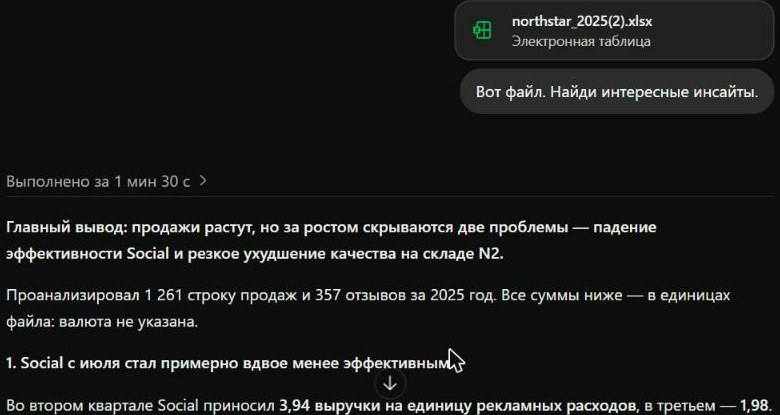
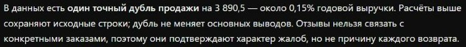

ИИ для анализа данных
Таблица → ответ → график → страница отчёта
Формулы, сводные и графики по просьбе обычными словами — в Excel, Google Таблицах или в чате с файлом. Учебный кейс — продажи интернет-магазина Northstar за 2025 год.
⏱ 1 мин. Сегодня берём обычную таблицу продаж и за урок получаем из неё формулы, сводную, три графика и страницу отчёта для руководителя. Делаем это в тех инструментах, что у вас уже есть.
Весь урок на одном файле: продажи вымышленного магазина Northstar за 2025 год, 1 261 строка и лист отзывов. В конце — короткий пример с большой базой YouTube-каналов, которая в Excel уже не помещается.
Три вопроса письма — три части урока

⏱ 2 мин. Так анализ выглядит в жизни: письмо с вопросами и файл-выгрузка. Справа настоящий файл урока, открытый в ChatGPT: 1 261 строка продаж за 2025 год и лист с отзывами.
В письме три конкретных вопроса: год в целом, отдача рекламы во втором полугодии, возвраты осенью. Каждый вопрос потом станет одним графиком. Мы весь урок отвечаем Анне.
Вопрос в чат Teams: «Какой вопрос из письма вы бы проверили первым и почему?» Соберите 2–3 ответа.
«Найди инсайты» тоже работает. Но вопросы выбирает модель



⏱ 4 мин. Результат 17 октября: на «найди интересные инсайты» ChatGPT за полторы минуты нашёл обе главные истории — падение отдачи Social и возвраты на складе N2. Модели стали сильными.
Справа ответ на промпт 1. Отметьте вслух, что верно: 1 261 строка, период, дубль. И что нет: «отсутствуют 632 значения ad_spend» — это нули, у Email и Organic рекламы нет; дату текстом 10/05/2025 модель не заметила. Переспросите: «Это пропуски или нули?» Из пяти вопросов берём первый, про каналы с учётом рекламы, — он совпадает с письмом.
Но посмотрите внимательнее. Сравнения модель выбрала сама: кварталы, полугодия. Дубль нашла, но написала «расчёты сохраняют исходные строки» — то есть дубль остался в цифрах. На вопрос Анны «что с продажами за год» прямого ответа нет. Промпт-опись даёт план и оставляет выбор вам.
Числа в ячейках проверить нельзя. Формулы — можно


⏱ 3 мин. Слева реальный лист, который вернул ChatGPT в нашем прогоне: в ячейках числа. Справа та же таблица в Excel, где выручка посчитана формулой СУММЕСЛИМН по листу Sales, а отдача — делением =B2/C2. Числа совпадают, но проверить можно только правую.
Правило: щёлкните любую ячейку с результатом. Видите число — попросите «замени числа формулами». Эталонная книга: demo_v2/excel_demo/northstar_2025_formulas.xlsx.
За год 6 % возвратов. В одной клетке — 24,8 %


⏱ 5 мин. Третий вопрос письма — возвраты осенью. Промпт 3 работает с таблицей: метрика, разрез, период, тип графика. Промпт 4 работает с текстом: модель сама находит склад с худшей долей, раскладывает отзывы на темы и сравнивает с остальными. «Покажи 5 примеров» — чтобы вы могли проверить темы глазами.
Демо: тот же чат, файл уже загружен. После каждого ответа раскройте код (блок «Анализ завершён» или кнопка кода над графиком). Под разбором — реальные результаты: на тепловой карте одна клетка горит, North × Electronics — 24,8 % против примерно 5 %. Это и есть склад N2. Темы отзывов: «упаковка / повреждения» у N2 — 49 %, у остальных 12 %. Ответ дольше 90 секунд — показываем кадр.
График правится словами, как текст

⏱ 3 мин. Это промпт 5 из демо. Слева график, который модель строит по умолчанию: заголовок-тема, легенда, два ярких цвета, мелкие подписи. Справа тот же график после одного промпта. На слайд руководителю идёт правый.
Пять правил из промпта годятся для любого графика: заголовок — вывод; сортировка; подписи прямо на столбцах; без лишнего (легенды, сетки); один акцентный цвет. Сохраните промпт себе, он в шпаргалке.
Внимательно посмотрите на числа: было 49 %, стало 46 %. Об этом следующий слайд.
Три версии графика — три разных числа. Сверяйте после каждой переделки

⏱ 4 мин. Мы просили только поменять оформление. А модель заодно пересчитала темы: похвалу упаковке («аккуратно упаковано») перенесла из темы «повреждения» в «товар в порядке». Доля стала 46 %, в итоговом отчёте — 44 %. По разметке, из которой мы собирали учебный файл, про повреждения 53 отзыва из 87, то есть 61 %. Модель ищет по ключевым словам и пропускает жалобы, написанные своими словами.
Если спросят про «остальных»: в первом графике у остальных складов 12 %, после перекраски 5 %. Модель пересчитала обе группы.
Вывод про склад N2 от этого не меняется: жалоб на повреждения там во много раз больше, чем у остальных. Меняется число, которое уйдёт руководителю. Поэтому после каждой переделки сверяйте пару чисел с прошлой версией, а темы отзывов проверяйте выборочным чтением.
Проверка за 60 секунд, три шага. Строки: сколько было, сколько стало. Одна точка: одно число с графика находите глазами в исходном файле. База процента: от какого месяца и за какой период.
Для любопытных, эксперимент из подготовки урока: на маленькой таблице модели без кода посчитали сумму правильно, но строку с 66 возвратами при 62 заказах «починили» на 6, хотя в источнике было 4. Догадку модели надо отличать от данных. Подробности: demo_assets/no_code_experiment_2026-10-13.md.
Руководителю отправляем файл отчёта. Превью в чате может врать


⏱ 3 мин (1 живой промпт). Итог анализа — файл, который можно переслать, а не скриншот чата. Промпт 6 просит две вещи: страницу отчёта и скрипт-рецепт.
Слева то, что ChatGPT показал в чате как превью отчёта: стоковая картинка с «Series A–E» и чужими числами. В центре — тот же отчёт, скачанный и открытый: всё на месте, числа наши. Вывод простой: превью не проверяем, проверяем открытый файл.
Справа рецепт: скрипт, который строит те же три графика из файла следующего месяца. В январе не нужно повторять весь диалог: кладёте новый файл и запускаете скрипт, в Colab или через чат: «запусти этот скрипт на новом файле». Оговорка: скрипт ждёт книгу с листами Sales и Reviews. На учебном demo_v2/northstar_sales_2026-01.csv (только продажи, один месяц) график отзывов не построится, а на графике по месяцам будет одна точка. Это нормально: скажите студентам заранее.